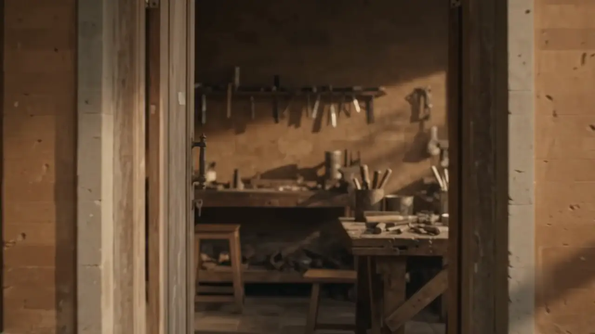
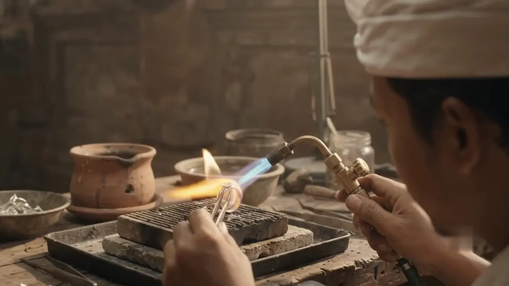
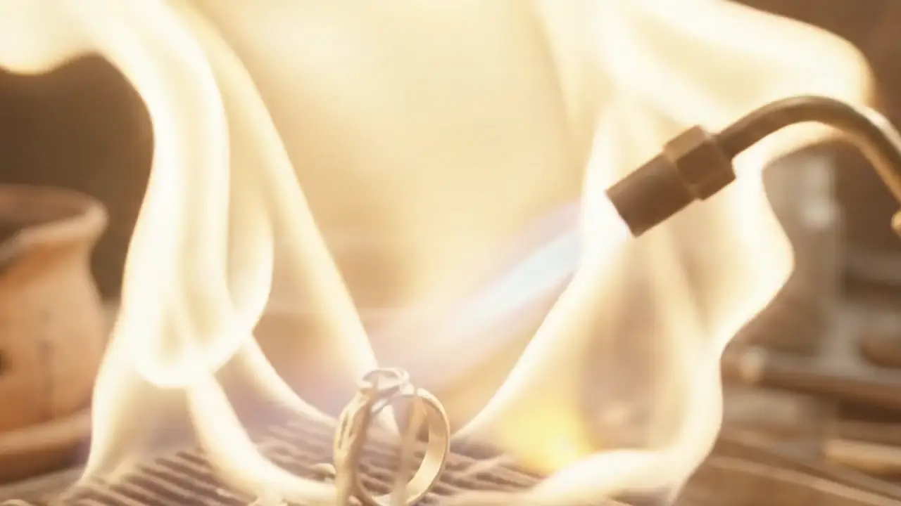
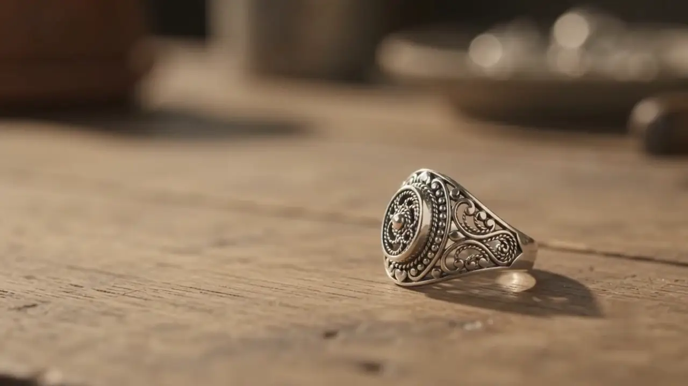

Video, controlled by scrolling: the camera moves through the carved wooden doorway of the workshop, over a workbench, to an artisan in a white udeng soldering with a small torch. The flame flares and becomes a finished silver ring resting on a wooden table.

Suwana Silver
Handmade silver from a family workshop in Celuk, since 1997.
Three generations, one workbench
Made Suwana's grandfather was the first silversmith in the family. He worked at a charcoal block in the family compound in Celuk, making silver pieces for ceremonies and for neighbors in the village.
Everything was done by hand: melting, drawing wire, twisting it into filigree, and setting tiny silver grains one by one.

How a piece is made
- 1DesignThe piece is drawn and the motif chosen: a flower, a lotus, a Barong.
- 2Melt925 silver is melted in a clay crucible and poured into a bar.
- 3Draw wireThe bar is pulled through a draw plate until the wire is thin enough.
- 4Shape filigreeFine wire is twisted and bent into the motif with tweezers.
- 5SolderEach joint is soldered on the charcoal block with a small torch.
- 6PolishThe piece is cleaned, filed and polished by hand.


One ring, made by hand
Every piece in the shop is made at this bench, one at a time.